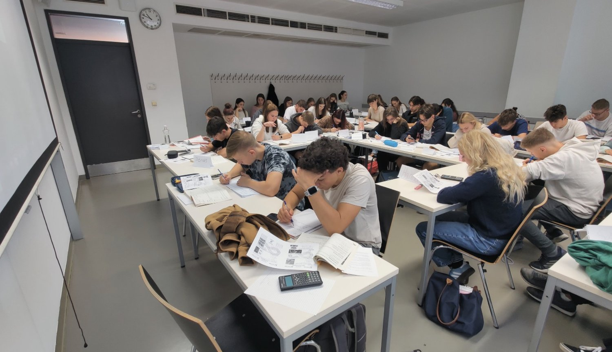

About
I grew up liking numbers. Maths was the thing I was good at and the thing I enjoyed, and for a long time that was enough on its own.
Then it stopped being enough, because getting the small calculations right is satisfying for a while but I wanted to see the bigger picture and have some say in why we were doing any of it. That is what moved me from maths towards strategy, and at Publicis it is what moved me out of the media department, where I was ordering and monitoring campaigns, and into digital strategy, where I got to decide what we were doing and why.
What I want from work now is to see my own contribution in the thing that comes out of it. Marketing is where the two halves of me meet. The numbers I have always liked, and the creative and strategic side I went looking for because the numbers alone were not enough.
I am in Madrid, looking for a growth or digital marketing role where I own decisions rather than only execute them.
Volunteering
For five years I taught maths on Saturdays for Studium Generale, a student-run volunteer organisation in Hungary. It prepares secondary school students for the final school-leaving exams, free, for students who would not get that preparation otherwise. I taught the advanced level maths exam, usually to a group of forty to sixty.

I also ran the week-long camps, where students do eight hours of maths a day.
For one year I was programme manager, running three permanent teams and two temporary ones, and I was responsible for the events of a section of more than sixty people.
I still teach maths, now one to one and online.
Outside work
I listen to a lot of Alex Hormozi, Chris Williamson and Andrew Huberman. For relationship advice, Esther Perel, or of course, my mother.
I work best in long uninterrupted blocks. I am social, and I push myself into situations that are uncomfortable rather than avoiding them. At the moment I am working through the hundred days of rejection tasks, from Jia Jiang's project, which is built on Jason Comely's Rejection Therapy game.
I go to the gym and play volleyball. I travel as often as I can.
I used to act, mostly background and small parts. Halo is the one listed on my IMDb page, and I am in The Witcher too. I do not do it any more.
I am writing a novel in Hungarian, called Conticinium. It comes from the Spanish conticinio, the quietest part of the night. It is part adventure, part science fiction, sprinkled with a little romance. The question underneath is why people are never satisfied with what they have.
Oh, and last but not least: I put the milk in before the cereal. If you disagree but are still not judging me, you are living by my fourth quote. They are all below.
Quotes
-
You cannot wish for an easy life and a good character. One is the price of the other.
Alex Hormozi
His point is that character gets built by doing hard things, so you do not get to order both. I use it as a filter. I try to take the route that makes for a more interesting person and a more colourful life, which is almost never the comfortable one.
-
No one knows enough to be a pessimist.
Wayne Dyer
I have always been an optimist, and seeing the glass as half full is one of the things I am actually good at. This is the argument for it. You cannot know what is coming, or what you will have the chance to do. I read once that if you asked the person you were five years ago to predict where you are now, they would get almost none of it right, and that has held up every time I have checked it against myself.
-
Winners lose more than losers ever will.
This one is about experimentation. You have to run a lot of tests and fail most of them before you find the thing that works, and you never find out if you never run them.
-
Be curious, not judgmental.
Ted Lasso, which credits Walt Whitman, who never wrote it
This applies to most of my life. When I hear something I disagree with, or something my first instinct is to judge, I try to stop and ask the person why, so I understand their position before I decide what I think of it. I still get to disagree afterwards. Being open-minded matters for a career for the same reason.